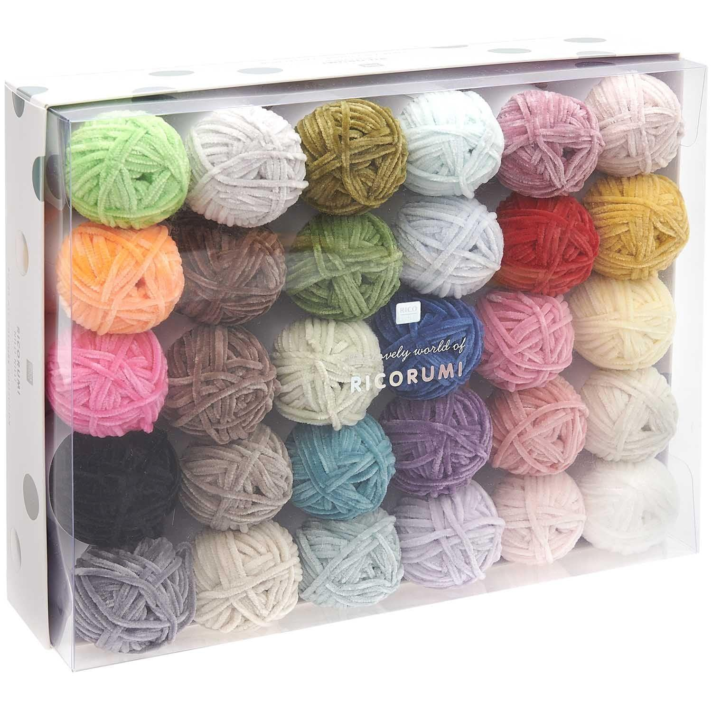
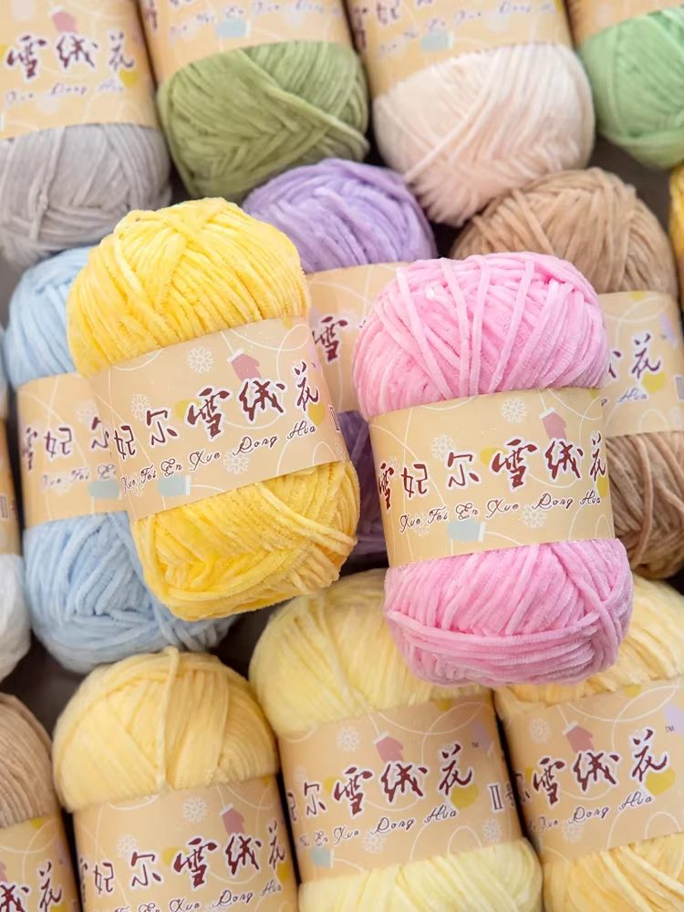
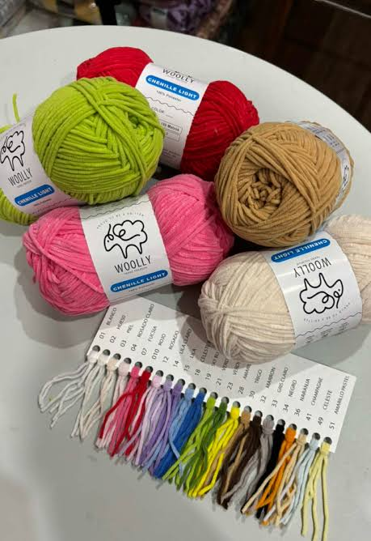
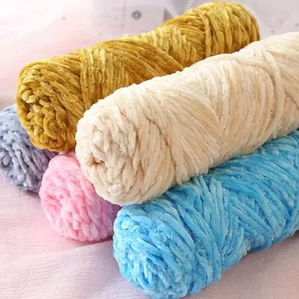

Lana chenille de 2mm: Ricorumi nilli nilli
♡ Ver detalles
Suave y resistente. Ideal para crear amigurumis pequeños que paracen un peluche de tela
Descubre las diferentes lanas que utilizo para mis proyectos favoritos.

Suave y resistente. Ideal para crear amigurumis pequeños que paracen un peluche de tela

Un poco más ligera que la anterior y disponible en muchos colores. Perfecta para diferentes proyectos🧡

Muy suave y esponjosa. Ideal para peluches y amigurumis adorables muy tiernos y pequeños💙

Es de la misma calidad solo que un poco más gruesa, para hacer amigurumis igual de lindos pero más grandes ❤️